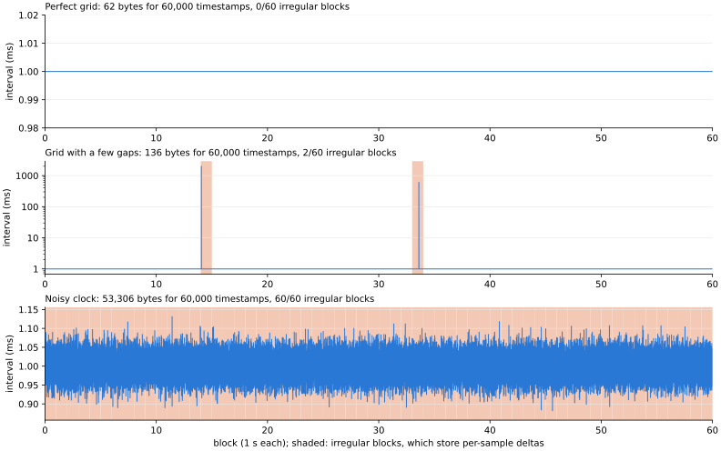
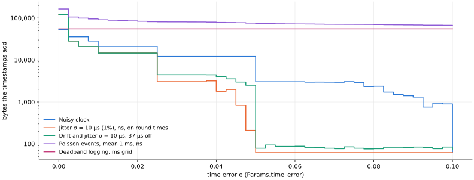

By default, fluxcode stores each sample's timestamp exactly alongside its values (the last section covers optional rounding by a fraction of an interval). This report isolates the time axis (SPEC §3) and measures what timestamps add to a one-minute block group (60 blocks of 1,000 samples at a nominal 1 kHz, stored as int64 nanosecond ticks). Every figure below is the difference between encoding the block group with timestamps and encoding it without them. For reference, the values alone (a 4.12 Hz sine wave at default settings) take 17,987 bytes, 292 µs to encode, and 102 µs to decode.
Regenerate: cd experimental && uv run python make_time_report.py.
In practice, most time series fall on either a perfect grid or a grid with occasional gaps. A noisy clock—such as host arrival timestamps—is the third common case, and the only one where timestamps take more space than the values themselves (about two and a half times as much here).

| shape | what it is | bytes (example) | bits/sample | irregular blocks | vs values | bytes over 64 groups: median | max | encode time added | decode time added |
|---|---|---|---|---|---|---|---|---|---|
| Perfect grid | Every interval exactly 1 ms: hardware-clocked acquisition, resampled or synthesized series. | 62 | 0.008 | 0/60 | 0.3% | 62 | 70 | +23 µs (+8%) | +18 µs (+18%) |
| Grid with a few gaps | A perfect grid that sometimes skips: dropped packets, reconnects, a paused logger (Poisson, mean 2 gaps per minute, each 5 ms to 3 s). | 136 | 0.018 | 2/60 | 0.8% | 136 | 709 | +31 µs (+11%) | +20 µs (+20%) |
| Noisy clock | Host timestamps on arrival: 1 ms nominal, σ = 20 µs jitter, µs resolution. | 53,306 | 7.107 | 60/60 | 296.4% | 53,300 | 53,434 | +405 µs (+138%) | +119 µs (+117%) |
Each example is the median-size block group across 64 seeds for that shape. Timings are single-threaded, best of 30 runs on an Apple M3 on AC power; added-time percentages are relative to the values-only encode (292 µs) and decode (102 µs). vs values shows timestamp bytes as a percentage of the 17,987 value bytes.
Params(time_error=0.1) lets fluxcode round it away, bringing the same clock down to
62 bytes (last section).A 1 ms grid with k gaps per minute (each lasting 5 ms to 3 s), showing the median across 16 block groups per row.
| gaps per minute | irregular blocks | bytes | bits/sample | bytes per gap |
|---|---|---|---|---|
| 0 | 0/60 | 62 | 0.008 | — |
| 1 | 1/60 | 108 | 0.014 | 46 |
| 2 | 2/60 | 138 | 0.018 | 38 |
| 5 | 5/60 | 626 | 0.084 | 113 |
| 10 | 9/60 | 758 | 0.101 | 70 |
| 20 | 17/60 | 955 | 0.127 | 45 |
| 60 | 38/60 | 1,132 | 0.151 | 18 |
For comparison, here are patterns from bench/time_axis.py that produce many more irregular blocks. Only
patterns with random intervals end up larger than the values. As above, percentages are relative to the values-only
encode and decode times.
| timestamps | bytes | bits/sample | irregular blocks | encode time added | decode time added |
|---|---|---|---|---|---|
| 1 kHz, 20 gaps | 908 | 0.121 | 19/60 | +123 µs (+42%) | +63 µs (+62%) |
| 1 kHz, 1% dropped | 1,300 | 0.173 | 60/60 | +322 µs (+110%) | +130 µs (+128%) |
| drifting clock (0.99998 ms) | 299 | 0.040 | 60/60 | +272 µs (+93%) | +90 µs (+89%) |
| jitter σ=10 µs, ns resolution | 120,646 | 16.086 | 60/60 | +475 µs (+162%) | +159 µs (+156%) |
| jitter σ=10 µs, µs resolution | 45,777 | 6.104 | 60/60 | +396 µs (+136%) | +146 µs (+143%) |
| Poisson events, mean 1 ms, µs | 87,653 | 11.687 | 60/60 | +394 µs (+135%) | +167 µs (+164%) |
| Poisson events, mean 1 ms, ns | 164,589 | 21.945 | 60/60 | +450 µs (+154%) | +171 µs (+168%) |
| deadband logging, ms grid | 55,255 | 7.367 | 60/60 | +616 µs (+211%) | +238 µs (+235%) |
| bursts 10 kHz / idle | 75 | 0.010 | 60/60 | +182 µs (+62%) | +101 µs (+99%) |
A 1% drop rate and a drifting clock stay compact because their intervals only take two or three distinct values. Jitter, Poisson events, and deadband logging have random intervals, and nanosecond resolution costs more than microsecond resolution whenever the jitter actually extends down to nanoseconds.
When timestamp jitter is just measurement noise, Params(time_error=e) allows fluxcode to round
timestamps (e ranges from 0 to 0.5, with 0 keeping them exact). Each block gets a coarse, consistent step where
at least 95% of timestamps stay within e of their own adjacent interval and no timestamp moves more than e
of the block's mean interval. Sample values are left untouched and the wire format stays identical, so the decoder simply
reads ordinary timestamps.
update_time_blocks stores newly added timestamps exactly, whereas
replace_time_blocks re-encodes whole blocks from the supplied samples.
| timestamps | exact | e = 0.02 | e = 0.05 | e = 0.1 |
|---|---|---|---|---|
| Perfect grid | 62 B · 0/60 +33 µs (+11%) | 62 B · 0/60 +77 µs (+26%) · max 0.000 | 62 B · 0/60 +76 µs (+26%) · max 0.000 | 62 B · 0/60 +73 µs (+25%) · max 0.000 |
| Grid with a few gaps | 136 B · 2/60 +63 µs (+22%) | 136 B · 2/60 +86 µs (+30%) · max 0.000 | 136 B · 2/60 +86 µs (+29%) · max 0.000 | 136 B · 2/60 +86 µs (+30%) · max 0.000 |
| Noisy clock | 53,306 B · 60/60 +464 µs (+159%) | 21,023 B · 60/60 +560 µs (+192%) · max 0.010 | 3,021 B · 60/60 +562 µs (+192%) · max 0.050 | 62 B · 0/60 +134 µs (+46%) · max 0.089 |
| Jitter σ = 10 µs (1%), ns, on round times | 120,646 B · 60/60 +531 µs (+182%) | 14,654 B · 60/60 +543 µs (+186%) · max 0.010 | 62 B · 0/60 +132 µs (+45%) · max 0.046 | 62 B · 0/60 +131 µs (+45%) · max 0.046 |
| The same, free-running: 50 µs off the epoch's grid | 120,585 B · 60/60 +537 µs (+184%) | 14,571 B · 60/60 +534 µs (+183%) · max 0.010 | 64 B · 0/60 +132 µs (+45%) · max 0.044 | 62 B · 0/60 +131 µs (+45%) · max 0.054 |
| Drifting clock (0.99998 ms) | 299 B · 60/60 +315 µs (+108%) | 74 B · 0/60 +139 µs (+48%) · max 0.020 | 74 B · 0/60 +139 µs (+48%) · max 0.049 | 66 B · 0/60 +135 µs (+46%) · max 0.098 |
| Drift and jitter σ = 10 µs, 37 µs off | 120,565 B · 60/60 +533 µs (+182%) | 14,586 B · 60/60 +533 µs (+182%) · max 0.010 | 79 B · 1/60 +155 µs (+53%) · max 0.050 | 75 B · 0/60 +136 µs (+47%) · max 0.100 |
| Poisson events, mean 1 ms, ns | 164,589 B · 60/60 +465 µs (+159%) | 83,709 B · 60/60 +650 µs (+222%) · max 0.001 | 73,731 B · 60/60 +638 µs (+218%) · max 0.002 | 66,355 B · 60/60 +629 µs (+215%) · max 0.005 |
| Deadband logging, ms grid | 55,255 B · 60/60 +672 µs (+230%) | 55,255 B · 60/60 +788 µs (+270%) · max 0.000 | 55,255 B · 60/60 +787 µs (+269%) · max 0.000 | 55,255 B · 60/60 +786 µs (+269%) · max 0.000 |
| 1024 Hz clock, jitter 0.5% (no 1-2-5 step divides the period) | 112,687 B · 60/60 +506 µs (+173%) | 9,188 B · 49/60 +512 µs (+175%) · max 0.020 | 119 B · 0/60 +155 µs (+53%) · max 0.050 | 93 B · 0/60 +155 µs (+53%) · max 0.101 |
| 60 Hz clock, jitter 0.5% (no 1-2-5 step divides the period) | 143,935 B · 60/60 +529 µs (+181%) | 5,862 B · 48/60 +481 µs (+165%) · max 0.020 | 160 B · 0/60 +176 µs (+60%) · max 0.051 | 101 B · 0/60 +167 µs (+57%) · max 0.102 |
Each cell shows the bytes added by timestamps and the number of irregular blocks out of 60, followed by the added encode time (as a percentage of the 292 µs values-only encode) and the largest timestamp shift in mean intervals. Timings are single-threaded, best of 30 runs on an Apple M3 on AC power. The chart samples e every 0.0025.
For the measurements behind these design choices (1-2-5 steps over powers of two, no value interpolation or resampling, and per-block phases), see docs/TUNING.md (Time error).